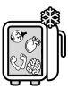
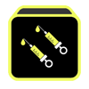
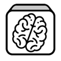
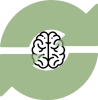
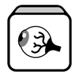
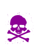

La phase pré-op' - la récolte
Méthode :
Chaque joueur :
• lance 3 dés de son choix (parmi les dés organes et doses)  et récupère les organes et le nombre de doses désignés par les faces des dés. Les organes collectés vont dans le frigo
et récupère les organes et le nombre de doses désignés par les faces des dés. Les organes collectés vont dans le frigo
Complément : DOUBLE ORGANE
Si lors d'un jet de dés, le joueur obtient deux organes identiques, au lieu de piocher deux fois l'organe du double, il pioche un organe de son choix dans une des 6 pioches et applique le résultat du troisième dé (piocher un organe ou prendre des doses). Ensuite les organes désignés par le double tournent de créature en créature dans le sens défini dans le tour (cette action est appelée « fais tourner »). Les joueurs dont la créature ne possède pas l'organe en question peuvent recevoir sans transmettre.
Le résultat des 3 dés lancés par le joueur est   
Complément : TRIPLE ORGANE
Jackpot ! Si lors d'un jet de dès, le joueur obtient trois organes identiques sur ses dés  
L'effet d'un triple se cumule à l'effet du double ! Après avoir pioché la carte Magouille, le joueur applique l'effet du double.
Le résultat des 3 dés lancés par le joueur est « œil / œil / œil »→ le joueur pioche une carte Magouille, un organe de son choix, un œil et les yeux des créatures tournent dans le sens du jeu .